java.lang package
Agenda
- Introduction
- Java.lang.Object class
- java.lang.String class
- StringBuffer
- StringBuilder (1.5v)
- Wrapper classes
- Utility methods
- Dancing between String, wrapper object and primitive
- Partial Hierarchy of java.lang package
- Autoboxing and Autounboxing
- Overloading with respect to widening, Autoboxing and var-arg methods
Introduction
The following are some of important classes present in java.lang package.
- Object class
- String class
- StringBuffer class
- StringBuilder class (1.5 v)
- Wrapper Classes
- Autoboxing and Autounboxing(1.5 v)
- For writing any java program the most commonly required classes and interfaces are encapsulated in the separate package which is nothing but java.lang package.
- It is not required to import java.lang package in our program because it is available by default to every java program.
What is your favorite package?
Why java.lang is your favorite package?
It is not required to import lang package explicitly but the remaining packages we have to import.
Java.lang.Object class:
- For any java object whether it is predefine or customized the most commonly required methods are encapsulated into a separate class which is nothing but object class.
- As object class acts as a root (or) parent (or) super for all java classes, by default its methods are available to every java class.
- Note : If our class doesn't extends any other class then it is the direct child class of object
If our class extends any other class then it is the indirect child class of Object.
The following is the list of all methods present in java.lang Object class :
- public String toString();
- public native int hashCode();
- public boolean equals(Object o);
- protected native Object clone()throws CloneNotSupportedException;
- public final Class getClass();
- protected void finalize()throws Throwable;
- public final void wait() throws InterruptedException;
- public final native void wait()throws InterruptedException;
- public final void wait(long ms,int ns)throws InterruptedException;
- public final native void notify();
- public final native void notifyAll();
toString( ) method :
- We can use this method to get string representation of an object.
- Whenever we are try to print any object reference internally toString() method will be executed.
- If our class doesn't contain toString() method then Object class toString() method will be executed.
-
Example:
System.out.println(s1); => super(s1.toString());
Example 1:
class Student
{
String name;
int rollno;
Student(String name, int rollno)
{
this.name=name;
this.rollno=rollno;
}
public static void main(String args[]){
Student s1=new Student("saicharan",101);
Student s2=new Student("ashok",102);
System.out.println(s1);
System.out.println(s1.toString());
System.out.println(s2);
}
}
Output:
Student@3e25a5
Student@3e25a5
Student@19821f
- In the above program Object class toString() method got executed which is implemented as follows.
public String toString() {
return getClass().getName() + "@" + Integer.toHexString(hashCode());
}
here getClass().getName() => classname@hexa_decimal_String_representation_of_hashCode
- To provide our own String representation we have to override toString() method in our class.
Ex : For example whenever we are try to print student reference to print his a name and roll no we have to override toString() method as follows.
public String toString(){
return name+"........"+rollno;
}
- In String class, StringBuffer, StringBuilder, wrapper classes and in all collection classes toString() method is overridden for meaningful string representation. Hence in our classes also highly recommended to override toString() method.
Example 2:
class Test{
public String toString(){
return "Test";
}
public static void main(String[] args){
Integer i=new Integer(10);
String s=new String("ashok");
Test t=new Test();
System.out.println(i);
System.out.println(s);
System.out.println(t);
}
}
Output:
10
ashok
Test
hashCode() method :
- For every object jvm will generate a unique number which is nothing but hashCode.
- Jvm will using hashCode while saving objects into hashing related data structures like HashSet, HashMap, and Hashtable etc.
- If the objects are stored according to hashCode searching will become very efficient (The most powerful search algorithm is hashing which will work based on hashCode).
- If we didn't override hashCode() method then Object class hashCode() method will be executed which generates hashCode based on address of the object but it doesn't mean hashCode represents address of the object.
- Based on our programming requirement we can override hashCode() method to generate our own hashcode.
- Overriding hashCode() method is said to be proper if and only if for every object we have to generate a unique number as hashcode for every object.
-
Example 3:
class Student
{
public int hashCode()
{
return 100;
}
}
It is improper way of overriding hashCode() method because for every object we are generating same hashcode.
|
class Student
{
int rollno;
public int hashCode()
{
return rollno;
}
}
It is proper way of overriding hashcode() method because for every object we are generating a different hashcode.
|
toString() method vs hashCode() method:
class Test
{
int i;
Test(int i)
{
this.i=i;
}
public static void main(String[] args){
Test t1=new Test(10);
Test t2=new Test(100);
System.out.println(t1);
System.out.println(t2);
}
}
Object==>toString() called.
Object==>hashCode() called.
In this case Object class toString( ) method got executed which is internally calls Object class hashCode( ) method.
|
class Test{
int i;
Test(int i){
this.i=i;
}
public int hashCode(){
return i;
}
public static void main(String[] args){
Test t1=new Test(10);
Test t2=new Test(100);
System.out.println(t1);
System.out.println(t2);
}}
Object==>toString() called.
Test==>hashCode() called.
In this case Object class toString( ) method got executed which is internally calls Test class hashCode( ) method.
|
Example 4:
class Test
{
int i;
Test(int i)
{
this.i=i;
}
public int hashCode(){
return i;
}
public String toString()
{
return i+"";
}
public static void main(String[] args){
Test t1=new Test(10);
Test t2=new Test(100);
System.out.println(t1);
System.out.println(t2);
}
}
Output:
10
100
In this case Test class toString() method got executed.
Note :
- if we are giving opportunity to Object class toString() method it internally calls hashCode() method. But if we are overriding toString() method it may not call hashCode() method.
- We can use toString() method while printing object references and we can use hashCode() method while saving objects into HashSet or Hashtable or HashMap.
equals() method:
- We can use this method to check equivalence of two objects.
- If our class doesn't contain .equals() method then object class .equals() method will be executed which is always meant for reference comparison[address comparison]. i.e., if two references pointing to the same object then only .equals( ) method returns true .
Example 5:
class Student
{
String name;
int rollno;
Student(String name,int rollno)
{
this.name=name;
this.rollno=rollno;
}
public static void main(String[] args){
Student s1=new Student("vijayabhaskar",101);
Student s2=new Student("bhaskar",102);
Student s3=new Student("vijayabhaskar",101);
Student s4=s1;
System.out.println(s1.equals(s2));
System.out.println(s1.equals(s3));
System.out.println(s1.equals(s4));
}}
Output:
False
False
True
Diagram:
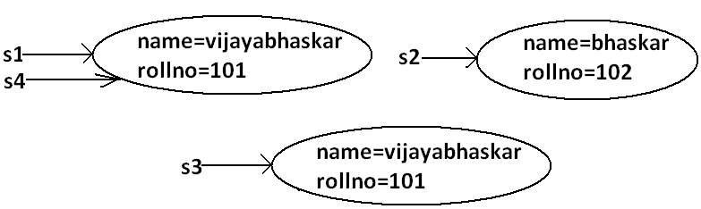
-
When ever we are overriding .equals() method we have to consider the following things :
- Meaning of content comparison i.e., whether we have to check the names are equal (or) roll numbers (or) both are equal.
- If we are passing different type of objects (heterogeneous object) our .equals() method should return false but not ClassCastException i.e., we have to handle ClassCastException to return false.
- If we are passing null argument our .equals() method should return false but not NullPointerException i.e., we have to handle NullPointerException to return false.
-
The following is the proper way of overriding .equals() method for content comparison in Student class.
Example 6:
class Student
{
String name;
int rollno;
Student(String name,int rollno)
{
this.name=name;
this.rollno=rollno;
}
public boolean equals(Object obj)
{
try{
String name1=this.name;
int rollno1=this.rollno;
Student s2=(Student)obj;
String name2=s2.name;
int rollno2=s2.rollno;
if(name1.equals(name2) && rollno1==rollno2)
{
return true;
}
else return false;
}
catch(ClassCastException e)
{
return false;
}
catch(NullPointerException e)
{
return false;
}
}
public static void main(String[] args){
Student s1=new Student("vijayabhaskar",101);
Student s2=new Student("bhaskar",102);
Student s3=new Student("vijayabhaskar",101);
Student s4=s1;
System.out.println(s1.equals(s2));
System.out.println(s1.equals(s3));
System.out.println(s1.equals(s4));
System.out.println(s1.equals("vijayabhaskar"));
System.out.println(s1.equals("null"));
}
}
Output:
False
True
True
False
False
Simplified version of .equals() method:
public boolean equals(Object o){
try{
Student s2=(Student)o;
if(name.equals(s2.name) && rollno==s2.rollno){
return true;
}
else return false;
}
catch(ClassCastException e) {
return false;
}
catch(NullPointerException e) {
return false;
}
}
More simplified version of .equals() method :
public boolean equals(Object o) {
if(this==o)
return true;
if(o instanceof Student) {
Student s2=(Student)o;
if(name.equals(s2.name) && rollno==s2.rollno)
return true;
else
return false;
}
return false;
}
Example 7 :
class Student {
String name;
int rollno;
Student(String name,int rollno) {
this.name=name;
this.rollno=rollno;
}
public boolean equals(Object o) {
if(this==o)
return true;
if(o instanceof Student) {
Student s2=(Student)o;
if(name.equals(s2.name) && rollno==s2.rollno)
return true;
else
return false;
}
return false;
}
public static void main(String[] args){
Student s=new Student("vijayabhaskar",101);
Integer i=new Integer(10);
System.out.println(s.equals(i));
}
}
Output:
False
To make .equals() method more efficient we have to place the following code at the top inside .equals() method.
if(this==o)
return true;
Diagram:
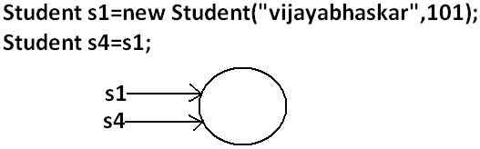
If 2 references pointing to the same object then .equals() method return true directly without performing any content comparison this approach improves performance of the system
String s1 = new String("ashok");
String s2 = new String("ashok");
System.out.println(s1==s2); //false
System.out.println(s1.equals(s2) ); //true
|
StringBuffer s1 = new StringBuffer("ashok");
StringBuffer s2 = new StringBuffer("ashok");
System.out.println(s1==s2); //false
System.out.println(s1.equals(s2) ); //false
|
|
In String class .equals( ) is overridden for content comparision hence if content is same .equals( ) method returns true , even though ths objects are different.
|
In StringBuffer class .equals( ) is not overriden for content comparision hence Object class .equals( ) will be executed which is meant for reference comparision , hence if objects are different .equals( ) method returns false , even though content is same.
|
Note :
In String class , Wrapper classes and all collection classes .equals( ) method is overriden for content comparision
Relationship between .equals() method and ==(double equal operator) :
- If r1==r2 is true then r1.equals(r2) is always true i.e., if two objects are equal by == operator then these objects are always equal by .equals( ) method also.
- If r1==r2 is false then we can't conclude anything about r1.equals(r2) it may return true (or) false.
- If r1.equals(r2) is true then we can't conclude anything about r1==r2 it may returns true (or) false.
- If r1.equals(r2) is false then r1==r2 is always false.
Differences between == (double equal operator) and .equals() method?
| == (double equal operator) | .equals() method |
|---|
| It is an operator applicable for both primitives and object references. | It is a method applicable only for object references but not for primitives. |
| In the case of primitives == (double equal operator) meant for content comparison, but in the case of object references == operator meant for reference comparison. | By default .equals() method present in object class is also meant for reference comparison. |
| We can't override== operator for content comparison in object references. | We can override .equals() method for content comparison. |
| If there is no relationship between argument types then we will get compile time error saying incompatible types.(relation means child to parent or parent to child or same type) | If there is no relationship between argument types then .equals() method simply returns false and we won't get any compile time error and runtime error. |
| For any object reference r,
r==null is always false. | For any object reference r,
r.equals(null) is also returns false. |
String s = new String("ashok");
StringBuffer sb = new StringBuffer("ashok");
System.out.println(s == sb); // CE : incomparable types : String and StringBuffer
System.out.println(s.equals(sb)); //false
Note:
in general we can use == (double equal operator) for reference comparison whereas .equals() method for content comparison.
Contract between .equals() method and hashCode() method:
- If 2 objects are equal by .equals() method compulsory their hashcodes must be equal (or) same. That is
If r1.equals(r2) is true then r1.hascode()==r2.hashcode( ) must be true.
- If 2 objects are not equal by .equals() method then there are no restrictions on hashCode() methods. They may be same (or) may be different. That is
If r1.equals(r2) is false then r1.hashCode()==r2.hashCode() may be same (or) may be different.
- If hashcodes of 2 objects are equal we can't conclude anything about .equals() method it may returns true (or) false. That is
If r1.hashCode()==r2.hashCode() is true then r1.equals(r2) method may returns true (or) false.
- If hashcodes of 2 objects are not equal then these objects are always not equal by .equals() method also. That is
If r1.hashCode()==r2.hashCode() is false then r1.equals(r2) is always false.
To maintain the above contract between .equals() and hashCode() methods whenever we are overriding .equals() method compulsory we should override hashCode() method. Violation leads to no compile time error and runtime error but it is not good programming practice.
Example :
Consider the following person class.
Program:
class Person {
String name;
int age;
Person(String name,int age) {
this.name=name;
this.age=age;
}
public boolean equals(Object o) {
if(this==o)
return true;
if(o instanceof Person) {
Person p2=(Person)o;
if(name.equals(p2.name) && age==p2.age)
return true;
else
return false;
}
return false;
}
public static void main(String[] args){
Person p1=new Person("vijayabhaskar",101);
Person p2=new Person("vijayabhaskar",101);
Integer i=new Integer(102);
System.out.println(p1.equals(p2));
System.out.println(p1.equals(i));
}
}
Output:
True
False
Which of the following is appropriate way of overriding hashCode() method?
Diagram:
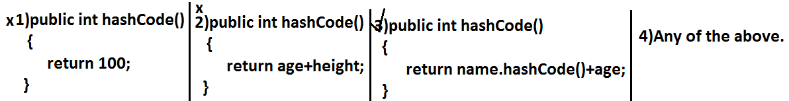
Based on whatever the parameters we override ".equals() method" we should use same parameters while overriding hashCode() method also.
Note: in all wrapper classes, in string class, in all collection classes .equals() method is overridden for content comparison in our classes also it is highly recommended to override .equals() method.
Which of the following is valid?
- If hash Codes of 2 objects are not equal then .equals() method always return false.(valid)
Example:
class Test {
int i;
Test(int i) {
this.i=i;
}
public int hashCode() {
return i;
}
public String toString() {
return i+"";
}
public static void main(String[] args) {
Test t1=new Test(10);
Test t2=new Test(20);
System.out.println(t1.hashCode());//10
System.out.println(t2.hashCode());//20
System.out.println(t1.hashCode()==t2.hashCode());//false
System.out.println(t1.equals(t2));//false
}
}
- If 2 objects are equal by == operator then their hash codes must be same.(valid)
Example:
class Test {
int i;
Test(int i) {
this.i=i;
}
public int hashCode() {
return i;
}
public String toString() {
return i+"";
}
public static void main(String[] args) {
Test t1=new Test(10);
Test t2=t1;
System.out.println(t1.hashCode());//10
System.out.println(t2.hashCode());//10
System.out.println(t1==t2);//true
}
}
- If == operator returns false then their hash codes(may be same (or) may be different) must be different.(invalid)
Example:
class Test {
int i;
Test(int i) {
this.i=i;
}
public int hashCode() {
return i;
}
public String toString() {
return i+"";
}
public static void main(String[] args) {
Test t1=new Test(10);
Test t2=new Test(10);
System.out.println(t1.hashCode());//10
System.out.println(t2.hashCode());//10
System.out.println(t1==t2);//false
}
}
- If hashcodes of 2 objects are equal then these objects are always equal by == operator also.(invalid)
Clone () method:
- The process of creating exactly duplicate object is called cloning.
- The main objective of cloning is to maintain backup purposes.(i.e., if something goes wrong we can recover the situation by using backup copy.)
- We can perform cloning by using clone() method of Object class.
protected native object clone() throws CloneNotSupportedException;
Example:
class Test implements Cloneable
{
int i=10;
int j=20;
public static void main(String[] args)throws CloneNotSupportedException
{
Test t1=new Test();
Test t2=(Test)t1.clone();
t2.i=888;
t2.j=999;
System.out.println(t1.i+"---------------"+t1.j);
System.out.println(t2.i+"---------------"+t2.j);
}
}
Output:
10---------------20
888---------------999
Diagram:
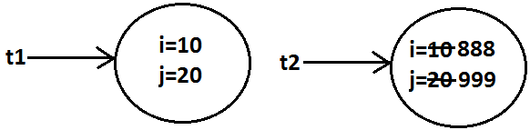
- We can perform cloning only for Cloneable objects.
- An object is said to be Cloneable if and only if the corresponding class implements Cloneable interface.
- Cloneable interface present in java.lang package and does not contain any methods. It is a marker interface where the required ability will be provided automatically by the JVM.
- If we are trying to perform cloning or non-clonable objects then we will get RuntimeException saying CloneNotSupportedException.
Shallow cloning vs Deep cloning :
Shallow cloning:
-
The process of creating bitwise copy of an object is called Shallow Cloning .
- If the main object contain any primitive variables then exactly duplicate copies will be created in cloned object.
- If the main object contain any reference variable then the corresponding object won't be created just reference variable will be created by pointing to old contained object.
- By using main object reference if we perform any change to the contained object then those changes will be reflected automatically to the cloned object , by default Object class clone( ) meant for Shallow Cloning
-
class Cat {
int j ;
Cat(int j) {
this.j=j ;
}
}
class Dog implements Cloneable {
Cat c ;
int i ;
Dog(Cat c , int i) {
this.c=c ;
this.i=i ;
}
public Object clone( ) throws CloneNotSupportedException {
return super.clone( );
}
}
public class ShallowClone {
public static void main(String[ ] ar) throws CloneNotSupportedException {
Cat c=new Cat(20) ;
Dog d1=new Dog(c , 10) ;
System.out.println(d1.i +"......"+d1.c.j); // 10......20
Dog d2=(Dog)d1.clone( ) ;
d1.i=888 ;
d1.c.j=999 ;
System.out.println(d2.i +"......"+d2.c.j); // 10......999
}
}
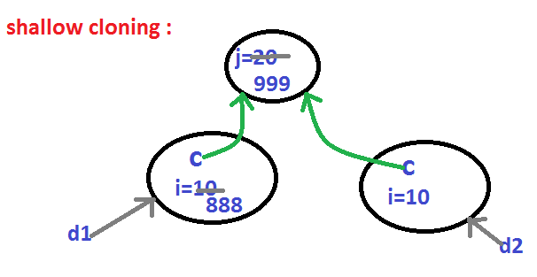
- Shallow cloning is the best choice , if the Object contains only primitive values.
- In Shallow cloning by using main object reference , if we perform any change to the contained object then those changes will be reflected automatically in cloned copy.
- To overcome this problem we should go for Deep cloning.
Example:
Test t1=new Test();
Test t2=t1;
Diagram:
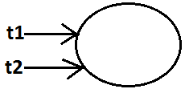
Deep Cloning :
- The process of creating exactly independent duplicate object(including contained objects also) is called deep cloning.
- In Deep cloning , if main object contain any reference variable then the corresponding Object copy will also be created in cloned object.
- Object class clone( ) method meant for Shallow Cloning , if we want Deep cloning then the programmer is responsible to implement by overriding clone( ) method.
-
package demo;
class Cat {
int j ;
Cat(int j) {
this.j=j ;
}
}
class Dog implements Cloneable {
Cat c ;
int i ;
Dog(Cat c , int i) {
this.c=c ;
this.i=i ;
}
public Object clone( ) throws CloneNotSupportedException {
Cat c1=new Cat(c.j) ;
Dog d1=new Dog(c1 , i) ;
return d1 ;
}
}
public class DeepClone {
public static void main(String[ ] ar) throws CloneNotSupportedException {
Cat c=new Cat(20) ;
Dog d1=new Dog(c , 10) ;
System.out.println(d1.i +"......"+d1.c.j); // 10......20
Dog d2=(Dog)d1.clone( ) ;
d1.i=888 ;
d1.c.j=999 ;
System.out.println(d2.i +"......"+d2.c.j); // 10......20
}
}
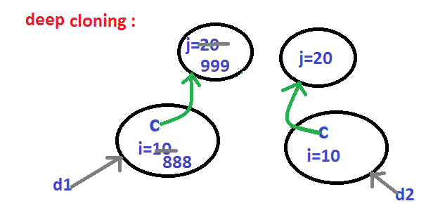
- In Deep cloning by using main Object reference if we perform any change to the contained Object those changes won't be reflected to the cloned object.
Example:
Test t1=new Test();
Test t2=(Test)t1.clone();
System.out.println(t1==t2); //false
System.out.println(t1.hashCode()==t2.hashCode()); //false
Diagram :
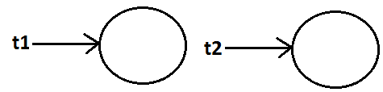
Which cloning is best ?
If the Object contain only primitive variable then Shallow Cloning is the best choice ,
If the Object contain reference variables then Deep cloning is the best choice.
Cloning by default Shallow cloning.
getClass() method :
This method returns runtime class definition of an object.
Example :
class Test implements Cloneable {
public static void main(String[] args)throws CloneNotSupportedException {
Object o=new String("ashok");
System.out.println("Runtime object type of o is :"+o.getClass().getName());
}
}
Output:
Runtime object type of o is: java.lang. String
Ex : To print Connecton interface implemented vendor specific class name .
System.out.println(con.getClass( ).getName( ) );
finalize( ) :
Just before destroying an object GC calls finalize( ) method to perform CleanUp activities .
wait( ) , notify( ) , notifyAll( )
We can use these methods for inter thread communication
java.lang.String class :
Case 1:
String s=new String("bhaskar");
s.concat("software");
System.out.println(s);//bhaskar
Once we create a String object we can't perform any changes in the existing object.
If we are try to perform any changes with those changes a new object will be created. This behavior is called immutability of the String object.
Diagram:
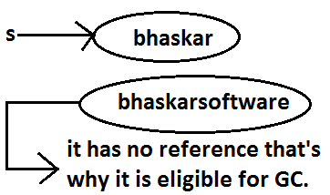
|
StringBuffer sb=new StringBuffer("bhaskar");
sb.append("software");
System.out.println(sb); //bhaskarsoftware
Once we created a StringBuffer object we can perform any changes in the existing object.
This behavior is called mutability of the StringBuffer object.
Diagram:
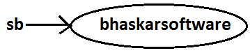
|
Case 2 :
String s1=new String("ashok");
String s2=new String("ashok");
System.out.println(s1==s2);//false
System.out.println(s1.equals(s2));//true
In String class .equals() method is overridden for content comparison hence if the content is same .equals() method returns true even though objects are different.
|
StringBuffer sb1=new StringBuffer("ashok");
StringBuffer sb2=new StringBuffer("ashok");
System.out.println(sb1==sb2);//false
System.out.println(sb1.equals(sb2));//false
In StringBuffer class .equals() method is not overridden for content comparison hence Object class .equals() method got executed which is always meant for reference comparison. Hence if objects are different .equals() method returns false even though content is same.
|
Case 3 :
String s=new String("bhaskar");
In this case two objects will be created one is on the heap the other one is SCP(String constant pool) and s is always pointing to heap object.
Diagram:
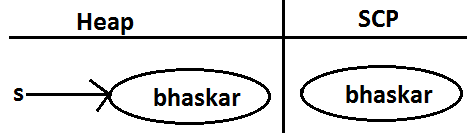
|
String s="bhaskar";
In this case only one object will be created in SCP and s is always referring that object.
Diagram :

|
Note :
- Object creation in SCP is always optional 1st JVM will check is any object already created with required content or not.
If it is already available then it will reuse existing object instead of creating new object.
If it is not already there then only a new object will be created.
Hence there is no chance of existing 2 objects with same content on SCP that is duplicate objects are not allowed in SCP.
- Garbage collector can't access SCP area hence even though object doesn't have any reference still that object is not eligible for GC if it is present in SCP.
- All SCP objects will be destroyed at the time of JVM shutdown automatically.
Example 1:
String s1=new String("bhaskar");
String s2=new String("bhaskar");
String s3="bhaskar";
String s4="bhaskar";
Note : When ever we are using new operator compulsory a new object will be created on the Heap .
There may be a chance of existing two objects with same content on the heap but there is no chance of existing two objects with same content on SCP . i.e., duplicate objects possible in the heap but not in SCP .
Diagram :
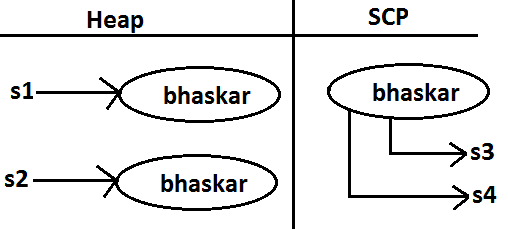
Example 2:
String s=new String("bhaskar");
s.concat("software");
s=s.concat("solutions");
s="bhaskarsoft";
Diagram :
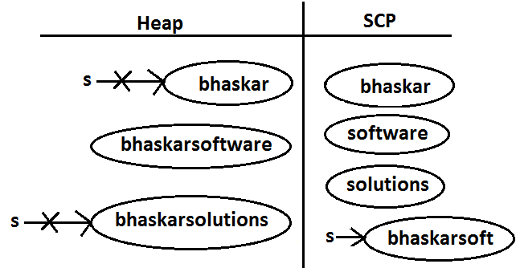
For every String Constant one object will be created in SCP.
Because of runtime operation if an object is required to create compulsory that object should be placed on the heap but not SCP.
Example 3:
String s1=new String("spring");
s1.concat("fall");
s1=s1+"winter";
String s2=s1.concat("summer");
System.out.println(s1);
System.out.println(s2);
Diagram :
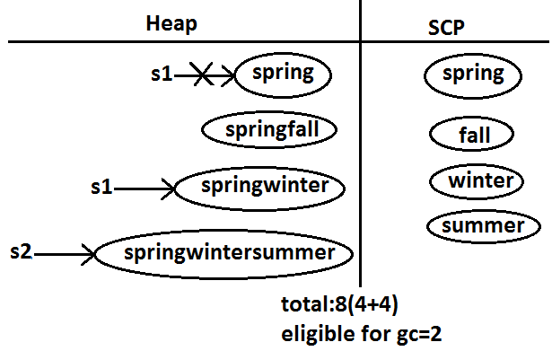
Example:
class StringDemo
{
public static void main(String[] args)
{
String s1=new String("you cannot change me!");
String s2=new String("you cannot change me!");
System.out.println(s1==s2);//false
String s3="you cannot change me!";
System.out.println(s1==s3);//false
String s4="you cannot change me!";
System.out.println(s3==s4);//true
String s5="you cannot "+"change me!";
System.out.println(s3==s5);//true
String s6="you cannot ";
String s7=s6+"change me!";
System.out.println(s3==s7);//false
final String s8="you cannot ";
String s9=s8+"change me!";
System.out.println(s3==s9);//true
System.out.println(s6==s8);//true
}
}
Diagram:
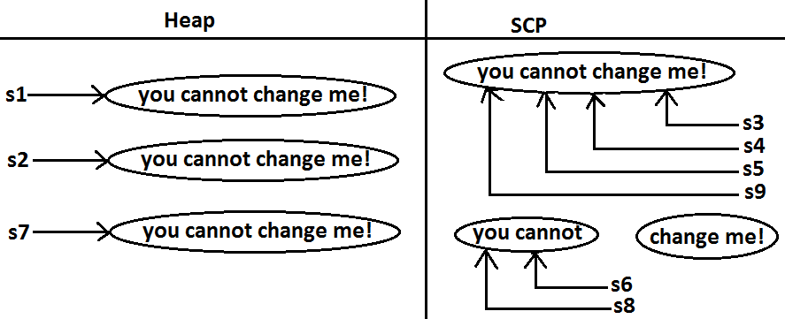
Importance of String constant pool (SCP) :
Diagram:
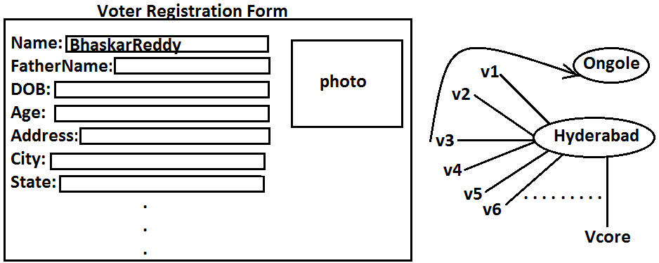
- In our program if any String object is required to use repeatedly then it is not recommended to create multiple object with same content it reduces performance of the system and effects memory utilization.
- We can create only one copy and we can reuse the same object for every requirement. This approach improves performance and memory utilization we can achieve this by using "scp".
- In SCP several references pointing to same object the main disadvantage in this approach is by using one reference if we are performing any change the remaining references will be impacted. To overcome this problem sun people implemented immutability concept for String objects.
- According to this once we creates a String object we can't perform any changes in the existing object if we are trying to perform any changes with those changes a new String object will be created hence immutability is the main disadvantage of scp.
FAQS :
- What is the main difference between String and StringBuilder?
- What is the main difference between String and StringBuffer ?
- Other than immutability and mutability is there any other difference between String and StringBuffer ?
In String .equals( ) method meant for content comparison where as in StringBuffer meant for reference comparision .
- What is the meaning of immutability and mutability?
- Explain immutability and mutability with an example?
- What is SCP?
A specially designed memory area for the String literals/objects .
- What is the advantage of SCP?
Instead of creating a separate object for every requirement we can create only one object and we can reuse same object for every requirement. This approach improves performance and memory utilization.
- What is the disadvantage of SCP?
In SCP as several references pointing to the same object by using one reference if we are performing any changes the remaining references will be inflected. To prevent this compulsory String objects should be immutable. That is immutability is the disadvantage of SCP.
- Why SCP like concept available only for the String but not for the StringBuffer?
As String object is the most commonly used object sun people provided a specially designed memory area like SCP to improve memory utilization and performance.
But StringBuffer object is not commonly used object hence specially designed memory area is not at all required.
- Why String objects are immutable where as StringBuffer objects are mutable?
In the case of String as several references pointing to the same object,
by using one reference if we are allowed perform the change the remaining references will be impacted.
To prevent this once we created a String object we can't perform any change in the existing object that is immutability is only due to SCP.
But in the case of StringBuffer for every requirement we are creating a separate object will be created by using one reference
if we are performing any change in the object the remaining references won't be impacted hence immutability concept is not require for the StringBuffer.
- Similar to String objects any other objects are immutable in java?
In addition to String objects , all wrapper objects are immutable in java.
- Is it possible to create our own mutable class?
Yes.
- Explain the process of creating our own immutable class with an example?
- What is the difference between final and immutability?
- What is interning of String objects?
Interning of String objects :
By using heap object reference, if we want to get corresponding SCP object , then we should go for intern() method.
Example 1:
class StringDemo {
public static void main(String[] args) {
String s1=new String("bhaskar");
String s2=s1.intern();
System.out.println(s1==s2); //false
String s3="bhaskar";
System.out.println(s2==s3);//true
}
}
Diagram:
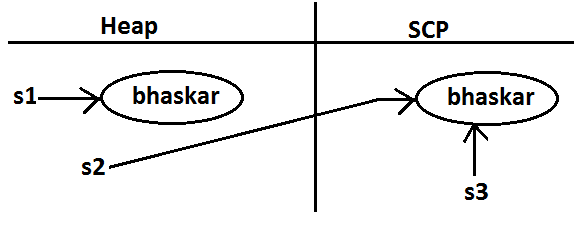
If the corresponding object is not there in SCP then intern() method itself will create that object and returns it.
Example 2:
class StringDemo {
public static void main(String[] args) {
String s1=new String("bhaskar");
String s2=s1.concat("software");
String s3=s2.intern();
String s4="bhaskarsoftware";
System.out.println(s3==s4);//true
}
}
Diagram 2:
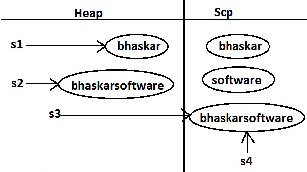
String class constructors :
- String s=new String();
Creates an empty String Object.
- String s=new String(String literals);
To create an equivalent String object for the given String literal on the heap.
- String s=new String(StringBuffer sb);
Creates an equivalent String object for the given StringBuffer.
- String s=new String(char[] ch);
creates an equivalent String object for the given char[ ] array.
Example:
class StringDemo {
public static void main(String[] args) {
char[] ch={'a','b','c'} ;
String s=new String(ch);
System.out.println(ch);//abc
}
}
- String s=new String(byte[] b);
Create an equivalent String object for the given byte[] array.
Example:
class StringDemo {
public static void main(String[] args) {
byte[] b={100,101,102};
String s=new String(b);
System.out.println(s);//def
}
}
Important methods of String class:
- public char charAt(int index);
Returns the character locating at specified index.
Example:
class StringDemo {
public static void main(String[] args) {
String s="ashok";
System.out.println(s.charAt(3));//o
System.out.println(s.charAt(100));// RE : StringIndexOutOfBoundsException
}
}
// index is zero based
- public String concat(String str);
Example:
class StringDemo {
public static void main(String[] args) {
String s="ashok";
s=s.concat("software");
//s=s+"software";
//s+="software";
System.out.println(s);//ashoksoftware
}
}
The overloaded "+" and "+=" operators also meant for concatenation purpose only.
- public boolean equals(Object o);
For content comparison where case is important.
It is the overriding version of Object class .equals() method.
- public boolean equalsIgnoreCase(String s);
For content comparison where case is not important.
Example:
class StringDemo {
public static void main(String[] args) {
String s="java";
System.out.println(s.equals("JAVA"));//false
System.out.println(s.equalsIgnoreCase("JAVA"));//true
}
}
Note: We can validate username by using .equalsIgnoreCase() method where case is not important and we can validate password by using .equals() method where case is important.
- public String substring(int begin);
Return the substring from begin index to end of the string.
Example:
class StringDemo {
public static void main(String[] args) {
String s="ashoksoft";
System.out.println(s.substring(5));//soft
}
}
- public String substring(int begin, int end);
Returns the substring from begin index to end-1 index.
Example:
class StringDemo {
public static void main(String[] args) {
String s="ashoksoft";
System.out.println(s.substring(5));//soft
System.out.println(s.substring(3,7));//okso
}
}
- public int length();
Returns the number of characters present in the string.
Example:
class StringDemo {
public static void main(String[] args) {
String s="jobs4times";
System.out.println(s.length());//10
//System.out.println(s.length);//compile time error
}
}
/*
CE :
StringDemo.java:7: cannot find symbol
symbol : variable length
location: class java.lang.String
*/
Note: length is the variable applicable for arrays where as length() method is applicable for String object.
- public String replace(char old, char new);
To replace every old character with a new character.
Example:
class StringDemo {
public static void main(String[] args) {
String s="ababab";
System.out.println(s.replace('a','b'));//bbbbbb
}
}
- public String toLowerCase();
Converts the all characters of the string to lowercase.
Example:
class StringDemo {
public static void main(String[] args) {
String s="ASHOK";
System.out.println(s.toLowerCase());//ashok
}
}
- public String toUpperCase();
Converts the all characters of the string to uppercase.
Example :
class StringDemo {
public static void main(String[] args) {
String s="ashok";
System.out.println(s.toUpperCase());//ASHOK
}
}
- public String trim();
We can use this method to remove blank spaces present at beginning and end of the string but not blank spaces present at middle of the String.
Example:
class StringDemo {
public static void main(String[] args) {
String s=" sai charan ";
System.out.println(s.trim());//sai charan
}
}
- public int indexOf(char ch);
It returns index of 1st occurrence of the specified character if the specified character is not available then return -1.
Example:
class StringDemo {
public static void main(String[] args) {
String s="saicharan";
System.out.println(s.indexOf('c')); // 3
System.out.println(s.indexOf('z')); // -1
}
}
- public int lastIndexOf(Char ch);
It returns index of last occurrence of the specified character if the specified character is not available then return -1.
Example:
class StringDemo {
public static void main(String[] args) {
String s="arunkumar";
System.out.println(s.lastIndexOf('a'));//7
System.out.println(s.indexOf('z'));//-1
}
}
Note :
Because runtime operation if there is a change in content with those changes a new object will be created only on the heap but not in SCP.
If there is no change in content no new object will be created the same object will be reused.
This rule is same whether object present on the Heap or SCP
Example 1 :
class StringDemo {
public static void main(String[] args) {
String s1="bhaskar";
String s2=s1.toUpperCase();
String s3=s1.toLowerCase();
System.out.println(s1==s2);//false
System.out.println(s1==s3);//true
}
}
Diagram :
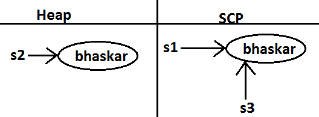
Example 2:
class StringDemo {
public static void main(String[] args) {
String s1="bhaskar";
String s2=s1.toString();
System.out.println(s1==s2);//true
}
}
Diagram :
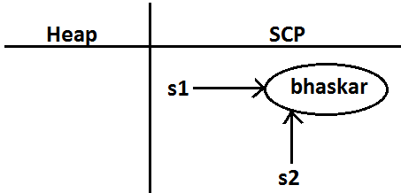
class StringDemo {
public static void main(String[] args) {
String s1=new String("ashok");
String s2=s1.toString();
String s3=s1.toUpperCase();
String s4=s1.toLowerCase();
String s5=s1.toUpperCase();
String s6=s3.toLowerCase();
System.out.println(s1==s6); //false
System.out.println(s3==s5); //false

Creation of our own immutable class:
Once we created an object we can't perform any changes in the existing object.
If we are trying to perform any changes with those changes a new object will be created.
If there is no change in the content then existing object will be reused. This behavior is called immutability.
Immutable program :
final class CreateImmutable {
private int i;
CreateImmutable(int i) {
this.i=i;
}
public CreateImmutable modify(int i) {
if(this.i==i)
return this;
else
return (new CreateImmutable(i));
}
public static void main(String[] args) {
CreateImmutable c1=new CreateImmutable(10);
CreateImmutable c2=c1.modify(100);
CreateImmutable c3=c1.modify(10);
System.out.println(c1==c2);//false
System.out.println(c1==c3);//true
CreateImmutable c4=c1.modify(100);
System.out.println(c2==c4);//false
}
}
Once we create a CreateImmutable object we can't perform any changes in the existing object , if we are trying to perform any changes with those changes a new object will be created.
If there is no chance in the content then existing object will be reused
Diagram:
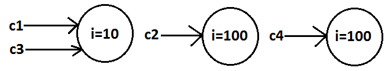
Final vs immutability :
- final modifier applicable for variables where as immutability concept applicable for objects
- If reference variable declared as final then we can't perform reassignment for the reference variable it doesn't mean we can't perform any change in that object.
- That is by declaring a reference variable as final we won't get any immutability nature .
- final and immutability both are different concepts .
Example:
class Test {
public static void main(String[] args) {
final StringBuffer sb=new StringBuffer("ashok");
sb.append("software");
System.out.println(sb);//ashoksoftware
sb=new StringBuffer("solutions"); //C.E: cannot assign a value to final variable sb
}
}
In the above example even though "sb" is final we can perform any type of change in the corresponding object. That is through final keyword we are not getting any immutability nature.
Which of the following are meaning ful ?
- final variable (valid)
- final object (invalid)
- immutable variable (invalid)
- immutable object (valid)
StringBuffer :
- If the content will change frequently then never recommended to go for String object because for every change a new object will be created internally.
- To handle this type of requirement we should go for StringBuffer concept.
- The main advantage of StringBuffer over String is, all required changes will be performed in the existing object only instead of creating new object.(won't create new object)
Constructors :
- StringBuffer sb=new StringBuffer();
Creates an empty StringBuffer object with default initialcapacity "16".
Once StringBuffer object reaches its maximum capacity a new StringBuffer object will be created with
Newcapacity=(currentcapacity+1)*2.
Example:
class StringBufferDemo {
public static void main(String[] args) {
StringBuffer sb=new StringBuffer();
System.out.println(sb.capacity());//16
sb.append("abcdefghijklmnop");
System.out.println(sb.capacity());//16
sb.append("q");
System.out.println(sb.capacity());//34
}
}
- StringBuffer sb=new StringBuffer(int initialcapacity);
Creates an empty StringBuffer object with the specified initial capacity.
Example:
class StringBufferDemo {
public static void main(String[] args) {
StringBuffer sb=new StringBuffer(19);
System.out.println(sb.capacity());//19
}
}
- StringBuffer sb=new StringBuffer(String s);
Creates an equivalent StringBuffer object for the given String with capacity=s.length()+16;
Example:
class StringBufferDemo {
public static void main(String[] args) {
StringBuffer sb=new StringBuffer("ashok");
System.out.println(sb.capacity());//21
}
}
Important methods of StringBuffer :
- public int length();
Return the no of characters present in the StringBuffer.
- public int capacity();
Returns the total no of characters StringBuffer can accommodate(hold).
- public char charAt(int index);
It returns the character located at specified index.
Example:
class StringBufferDemo {
public static void main(String[] args) {
StringBuffer sb=new StringBuffer("saiashokkumarreddy");
System.out.println(sb.length());//18
System.out.println(sb.capacity());//34
System.out.println(sb.charAt(14));//e
System.out.println(sb.charAt(30));//RE : StringIndexOutofBoundsException
}
}
- public void setCharAt(int index, char ch);
To replace the character locating at specified index with the provided character.
Example:
class StringBufferDemo {
public static void main(String[] args) {
StringBuffer sb=new StringBuffer("ashokkumar");
sb.setCharAt(8,'A');
System.out.println(sb);
}
}
-
public StringBuffer append(String s);
public StringBuffer append(int i);
public StringBuffer append(long l);
public StringBuffer append(boolean b); All these are overloaded methods.
public StringBuffer append(double d);
public StringBuffer append(float f);
public StringBuffer append(int index, Object o);
Example:
class StringBufferDemo {
public static void main(String[] args) {
StringBuffer sb=new StringBuffer();
sb.append("PI value is :");
sb.append(3.14);
sb.append(" this is exactly ");
sb.append(true);
System.out.println(sb);//PI value is :3.14 this is exactly true
}
}
-
public StringBuffer insert(int index,String s);
public StringBuffer insert(int index,int i);
public StringBuffer insert(int index,long l);
public StringBuffer insert(int index,double d); All are overloaded methods
public StringBuffer insert(int index,boolean b);
public StringBuffer insert(int index,float f);
public StringBuffer insert(int index, Object o);
To insert at the specified location.
Example :
class StringBufferDemo {
public static void main(String[] args) {
StringBuffer sb=new StringBuffer("abcdefgh");
sb.insert(2, "xyz");
sb.insert(11,"9");
System.out.println(sb);//abxyzcdefgh9
}
}
- public StringBuffer delete(int begin,int end);
To delete characters from begin index to end n-1 index.
- public StringBuffer deleteCharAt(int index);
To delete the character locating at specified index.
Example:
class StringBufferDemo {
public static void main(String[] args) {
StringBuffer sb=new StringBuffer("saicharankumar");
System.out.println(sb);//saicharankumar
sb.delete(6,13);
System.out.println(sb);//saichar
sb.deleteCharAt(5);
System.out.println(sb);//saichr
}
}
- public StringBuffer reverse();
Example :
class StringBufferDemo {
public static void main(String[] args) {
StringBuffer sb=new StringBuffer("ashokkumar");
System.out.println(sb);//ashokkumar
System.out.println(sb.reverse());//ramukkohsa
}
}
- public void setLength(int length);
Consider only specified no of characters and remove all the remaining characters.
Example:
class StringBufferDemo {
public static void main(String[] args) {
StringBuffer sb=new StringBuffer("ashokkumar");
sb.setLength(6);
System.out.println(sb);//ashokk
}
}
- public void trimToSize();
To deallocate the extra allocated free memory such that capacity and size are equal.
Example:
class StringBufferDemo {
public static void main(String[] args) {
StringBuffer sb=new StringBuffer(1000);
System.out.println(sb.capacity());//1000
sb.append("ashok");
System.out.println(sb.capacity());//1000
sb.trimToSize();
System.out.println(sb.capacity());//5
}
}
- public void ensureCapacity(int initialcapacity);
To increase the capacity dynamically(fly) based on our requirement.
Example:
class StringBufferDemo {
public static void main(String[] args) {
StringBuffer sb=new StringBuffer();
System.out.println(sb.capacity());//16
sb.ensureCapacity(1000);
System.out.println(sb.capacity());//1000
}
}
Note :
Every method present in StringBuffer is syncronized hence at a time only one thread is allowed to operate on StringBuffer object ,
it increases waiting time of the threads and creates performence problems , to overcome this problem we should go for StringBuilder.
StringBuilder (1.5v)
- Every method present in StringBuffer is declared as synchronized hence at a time only one thread is allowed to operate on the StringBuffer object due to this,
waiting time of the threads will be increased and effects performance of the system.
- To overcome this problem sun people introduced StringBuilder concept in 1.5v.
StringBuffer Vs StringBuilder
StringBuilder is exactly same as StringBuffer(includung constructors and methods ) except the following differences :
| StringBuffer | StringBuilder |
|---|
| Every method present in StringBuffer is synchronized. | No method present in StringBuilder is synchronized. |
| At a time only one thread is allow to operate on the StringBuffer object hence StringBuffer object is Thread safe. |
At a time Multiple Threads are allowed to operate simultaneously on the StringBuilder object hence StringBuilder is not Thread safe. |
| It increases waiting time of the Thread and hence relatively performance is low. | Threads are not required to wait and hence relatively performance is high. |
| Introduced in 1.0 version. | Introduced in 1.5 versions. |
String vs StringBuffer vs StringBuilder :
- If the content is fixed and won't change frequently then we should go for String.
- If the content will change frequently but Thread safety is required then we should go for StringBuffer.
- If the content will change frequently and Thread safety is not required then we should go for StringBuilder.
Method chaining:
- For most of the methods in String, StringBuffer and StringBuilder the return type is same type only. Hence after applying method on the result we can call another method which forms method chaining.
Example:
sb.m1().m2().m3()...............
- In method chaining all methods will be evaluated from left to right.
Example:
class StringBufferDemo {
public static void main(String[] args) {
sb.append("ashok").insert(5,"arunkumar").delete(11,13)
.reverse().append("solutions").insert(18,"abcdf").reverse();
System.out.println(sb); // snofdcbaitulosashokarunkur
}
}
Wrapper classes :
The main objectives of wrapper classes are:
- To wrap primitives into object form so that we can handle primitives also just like objects.
- To define several utility functions which are required for the primitives.
Constructors :
-
All most all wrapper classes define the following 2 constructors one can take corresponding primitive as argument and the other can take String as argument.
Example:
1) Integer i=new Integer(10);
2) Integer i=new Integer("10");
- If the String is not properly formatted i.e., if it is not representing number then we will get runtime exception saying "NumberFormatException".
Example:
class WrapperClassDemo {
public static void main(String[] args)throws Exception {
Integer i=new Integer("ten");
System.out.println(i);//NumberFormatException
}
}
- Float class defines 3 constructors with float, String and double arguments.
1) Float f=new Float (10.5f);
2) Float f=new Float ("10.5f");
3) Float f=new Float(10.5);
4) Float f=new Float ("10.5");
- Character class defines only one constructor which can take char primitive as argument there is no String argument constructor.
Character ch=new Character('a');//valid
Character ch=new Character("a");//invalid
-
Boolean class defines 2 constructors with boolean primitive and String arguments.
If we want to pass boolean primitive the only allowed values are true, false where case should be lower case.
Example:
Boolean b=new Boolean(true);
Boolean b=new Boolean(false);
//Boolean b1=new Boolean(True);//C.E
//Boolean b=new Boolean(False);//C.E
//Boolean b=new Boolean(TRUE);//C.E
- If we are passing String argument then case is not important and content is not important. If the content is case insensitive String of true then it is treated as true in all other cases it is treated as false.
Example 1:
class WrapperClassDemo {
public static void main(String[] args)throws Exception {
Boolean b1=new Boolean("true");
Boolean b2=new Boolean("True");
Boolean b3=new Boolean("false");
Boolean b4=new Boolean("False");
Boolean b5=new Boolean("ashok");
Boolean b6=new Boolean("TRUE");
System.out.println(b1);//true
System.out.println(b2);//true
System.out.println(b3);//false
System.out.println(b4);//false
System.out.println(b5);//false
System.out.println(b6);//true
}
}
Example 2(for exam purpose):
class WrapperClassDemo {
public static void main(String[] args)throws Exception {
Boolean b1=new Boolean("yes");
Boolean b2=new Boolean("no");
System.out.println(b1);//false
System.out.println(b2);//false
System.out.println(b1.equals(b2));//true
System.out.println(b1==b2);//false
}
}
Wrapper class Constructor summery :
| Wrapper class | Constructor summery |
| Byte | byte, String |
| Short | short, String |
| Integer | Int, String |
| Long | long, String |
| Float | float, String, double |
| Double | double, String |
| Character | |
| Boolean | boolean, String |
Note :
1) In all wrapper classes toString() method is overridden to return its content.
2) In all wrapper classes .equals() method is overridden for content compression.
Example :
Integer i1 = new Integer(10) ;
Integer i2 = new Integer(10);
System.out.println(i1); //10
System.out.println(i1.equals(i2)); //true
Utility methods :
- valueOf() method.
- XXXValue() method.
- parseXxx() method.
- toString() method.
valueOf() method :
We can use valueOf() method to create wrapper object for the given primitive or String this method is alternative to constructor.
Form 1:
Every wrapper class except Character class contains a static valueOf() method to create wrapper object for the given String.
public static wrapper valueOf(String s);
Example:
class WrapperClassDemo {
public static void main(String[] args)throws Exception {
Integer i=Integer.valueOf("10");
Double d=Double.valueOf("10.5");
Boolean b=Boolean.valueOf("ashok");
System.out.println(i);//10
System.out.println(d);//10.5
System.out.println(b);//false
}
}
Form 2:
Every integral type wrapper class (Byte, Short, Integer, and Long) contains the following valueOf() method to convert specified radix string to wrapper object.
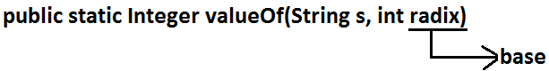
public static wrapper valueOf(String s , int radix ) ;
//radix means base
Note:
the allowed radix range is 2 to 36.
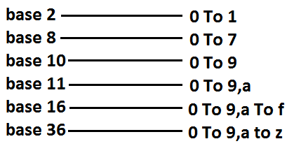
Example:
class WrapperClassDemo {
public static void main(String[] args) {
Integer i=Integer.valueOf("100",2);
System.out.println(i);//4
}
}
Analysis:
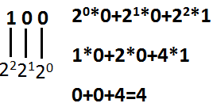
Form 3 :
Every wrapper class including Character class defines valueOf() method to convert primitive to wrapper object.
public static wrapper valueOf(primitive p);
Example:
class WrapperClassDemo {
public static void main(String[] args)throws Exception {
Integer i=Integer.valueOf(10);
Double d=Double.valueOf(10.5);
Boolean b=Boolean.valueOf(true);
Character ch=Character.valueOf('a');
System.out.println(ch); //a
System.out.println(i);//10
System.out.println(d);//10.5
System.out.println(b);//true
}
}
Diagram:
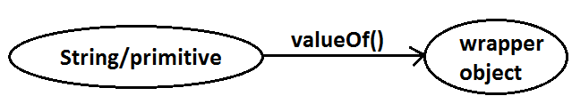
xxxValue() method :
We can use xxxValue() methods to convert wrapper object to primitive.
Every number type wrapper class (Byte, Short, Integer, Long, Float, Double) contains the following 6 xxxValue() methods to convert wrapper object to primitives.
1)public byte byteValue()
2)public short shortValue()
3)public int intValue()
4)public long longValue()
5)public float floatValue()
6)public double doubleValue();
Example:
class WrapperClassDemo {
public static void main(String[] args)throws Exception {
Integer i=new Integer(130);
System.out.println(i.byteValue());//-126
System.out.println(i.shortValue());//130
System.out.println(i.intValue());//130
System.out.println(i.longValue());//130
System.out.println(i.floatValue());//130.0
System.out.println(i.doubleValue());//130.0
}
}
charValue() method:
Character class contains charValue() method to convert Character object to char primitive.
public char charValue();
Example:
class WrapperClassDemo {
public static void main(String[] args) {
Character ch=new Character('a');
char c=ch.charValue();
System.out.println(c);//a
}
}
booleanValue() method:
Boolean class contains booleanValue() method to convert Boolean object to boolean primitive.
public boolean booleanValue( );
Example:
class WrapperClassDemo {
public static void main(String[] args) {
Boolean b=new Boolean("ashok");
boolean b1=b.booleanValue();
System.out.println(b1);//false
}
}
Diagram :
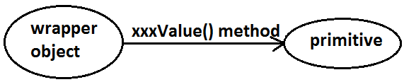
In total there are 38(= 6*6+1+1) xxxValue() methods are possible.
parseXxx() method :
We can use this method to convert String to corresponding primitive.
Form1 :
Every wrapper class except Character class contains a static parseXxx() method to convert String to corresponding primitive.
public static primitive parseXxx(String s);
Example:
class WrapperClassDemo {
public static void main(String[] args) {
int i=Integer.parseInt("10");
boolean b=Boolean.parseBoolean("ashok");
double d=Double.parseDouble("10.5");
System.out.println(i);//10
System.out.println(b);//false
System.out.println(d);//10.5
}
}
Form 2:
integral type wrapper classes(Byte, Short, Integer, Long) contains the following parseXxx() method to convert specified radix String form to corresponding primitive.
public static primitive parseXxx(String s,int radix);
The allowed range of redix is : 2 to 36
Example:
class WrapperClassDemo {
public static void main(String[] args) {
int i=Integer.parseInt("100",2);
System.out.println(i);//4
}
}
Diagram :
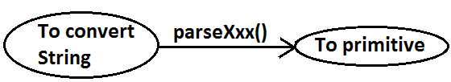
toString() method :
We can use toString() method to convert wrapper object (or) primitive to String.
Form 1 :
public String toString();
- Every wrapper class (including Character class) contains the above toString() method to convert wrapper object to String.
- It is the overriding version of Object class toString() method.
- Whenever we are trying to print wrapper object reference internally this toString() method only executed.
Example:
class WrapperClassDemo {
public static void main(String[] args) {
Integer i=Integer.valueOf("10");
System.out.println(i);//10
System.out.println(i.toString());//10
}
}
Form 2: Every wrapper class contains a static toString() method to convert primitive to String.
public static String toString(primitive p);
Example:
class WrapperClassDemo {
public static void main(String[] args) {
String s1=Integer.toString(10);
String s2=Boolean.toString(true);
String s3=Character.toString('a');
System.out.println(s1); //10
System.out.println(s2); //true
System.out.println(s3); //a
}
}
Form 3:
Integer and Long classes contains the following static toString() method to convert the primitive to specified radix String form.
public static String toString(primitive p, int radix);
Example:
class WrapperClassDemo {
public static void main(String[] args) {
String s1=Integer.toString(7,2);
String s2=Integer.toString(17,2);
System.out.println(s1);//111
System.out.println(s2);//10001
}
}
Form 4:
Integer and Long classes contains the following toXxxString() methods.
public static String toBinaryString(primitive p);
public static String toOctalString(primitive p);
public static String toHexString(primitive p);
Example:
class WrapperClassDemo {
public static void main(String[] args) {
String s1=Integer.toBinaryString(7);
String s2=Integer.toOctalString(10);
String s3=Integer.toHexString(20);
String s4=Integer.toHexString(10);
System.out.println(s1);//111
System.out.println(s2);//12
System.out.println(s3);//14
System.out.println(s4);//a
}
}
Diagram:
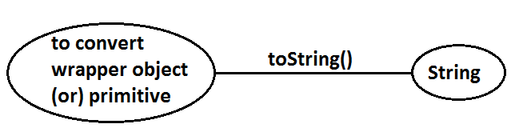
Dancing between String, wrapper object and primitive :
Diagram:
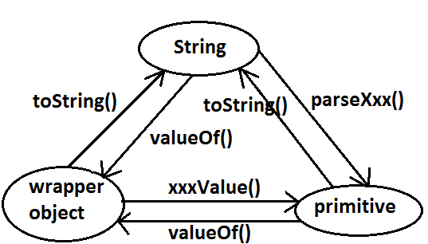
Partial Hierarchy of java.lang package :
Diagram :
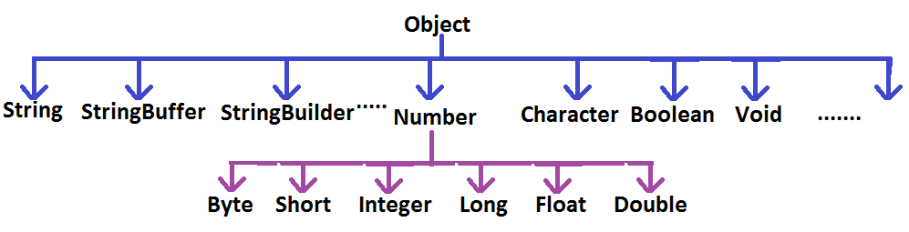
- String, StringBuffer, StringBuilder and all wrapper classes are final classes.
- The wrapper classes which are not child class of Number are Boolean and Character.
- The wrapper classes which are not direct class of Object are Byte, Short, Integer, Long, Float, Double.
- Sometimes we can consider Void is also as wrapper class.
- In addition to String objects , all wrapper class objects also immutable in java.
Void :
- Sometimes Void class is also considered as wrapper class.
- Void is class representation of void java keyword.
- Void class is the direct child class of Object and it doesn't contains any method and it contains only one static variable Void.TYPE
- we can use Void class in reflections
Ex : To check whether return type of m1( ) is void or not .
if(ob.getClass( ).getMethod("m1").getReturnType( )==Void.TYPE) {
----------------------------
----------------------------
}
Autoboxing and Autounboxing (1.5v):
Until 1.4 version we can't provide wrapper object in the place of primitive and primitive in the place of wrapper object all the required
conversions should be performed explicitly by the programmer.
Example 1 :
Program 1 :
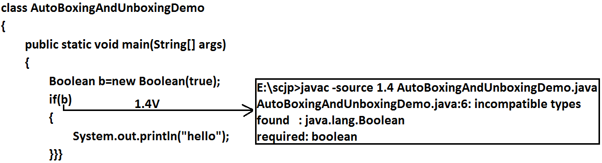
Program 2:
class AutoBoxingAndUnboxingDemo {
public static void main(String[] args) {
Boolean b=new Boolean(true);
if(b) {
System.out.println("hello");
}
}
}
Output:
hello
Example 2:
Program 1:
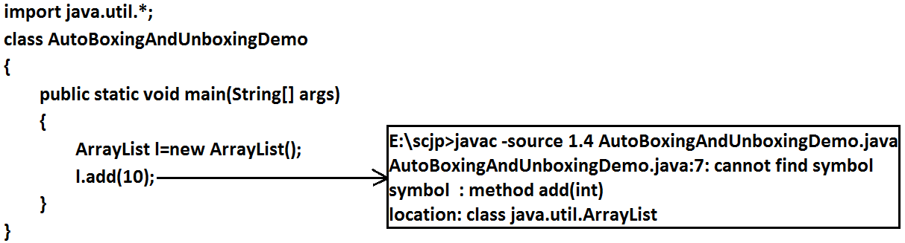
Program 2:
import java.util.*;
class AutoBoxingAndUnboxingDemo {
public static void main(String[] args) {
ArrayList l=new ArrayList();
Integer i=new Integer(10);
l.add(i);
}
}
But from 1.5 version onwards we can provide primitive value in the place of wrapper and wrapper object in the place of primitive all required conversions will be performed automatically by compiler.
These automatic conversions are called Autoboxing and Autounboxing.
Autoboxing :
Automatic conversion of primitive to wrapper object by compiler is called Autoboxing.
Example :
Integer i=10;
[compiler converts "int" to "Integer" automatically by Autoboxing]
After compilation the above line will become.
Integer i=Integer.valueOf(10);
That is internally Autoboxing concept is implemented by using valueOf() method.
Autounboxing :
automatic conversion of wrapper object to primitive by compiler is called Autounboxing.
Example:
Integer I=new Integer(10);
Int i=I;
[ compiler converts "Integer" to "int" automatically by Autounboxing ]
After compilation the above line will become.
Int i=I.intValue();
That is Autounboxing concept is internally implemented by using xxxValue() method.
Diagram :
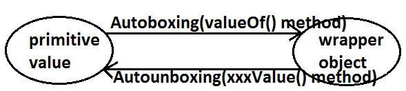
Example :
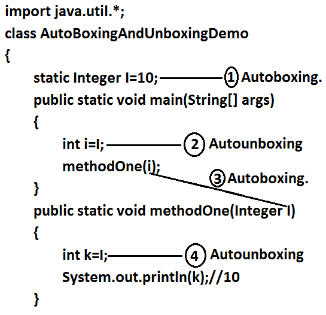
It is valid in 1.5 version but invalid in 1.4 version.
Note:
From 1.5 version onwards we can use primitives and wrapper objects interchangly the required conversions will be performed automatically by compiler.
Example 1:
import java.util.*;
class AutoBoxingAndUnboxingDemo {
static Integer I=0;
public static void main(String[] args) {
int i=I;
System.out.println(i);//0
}
}
Example 2 :
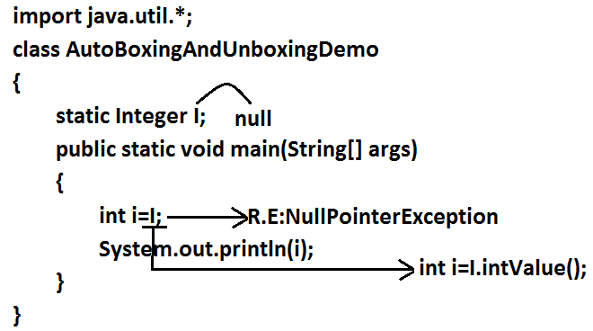
If we provide null reference for autounboxing , we will get NullPointerException
Example 3:
import java.util.*;
class AutoBoxingAndUnboxingDemo {
public static void main(String[] args) {
Integer x=10;
Integer y=x;
++x;
System.out.println(x);//11
System.out.println(y);//10
System.out.println(x==y);//false
}
}
Diagram :
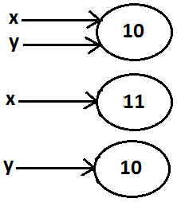
Note :
All wrapper objects are immutable that is once we created a wrapper object we can't perform any changes in the existing object.
If we are trying to perform any changes with those changes a new object will be created.
Example 1:
import java.util.*;
class AutoBoxingAndUnboxingDemo {
public static void main(String[] args) {
Integer x=new Integer(10);
Integer y=new Integer(10);
System.out.println(x==y);//false
}
}
Diagram :
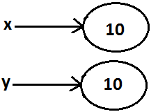
Example 2 :
import java.util.*;
class AutoBoxingAndUnboxingDemo {
public static void main(String[] args) {
Integer x=new Integer(10);
Integer y=10;
System.out.println(x==y);//false
}
}
Diagram:
Example 3:
import java.util.*;
class AutoBoxingAndUnboxingDemo {
public static void main(String[] args) {
Integer x=new Integer(10);
Integer y=x;
System.out.println(x==y);//true
}
}
Diagram :
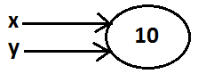
Example 4 :
import java.util.*;
class AutoBoxingAndUnboxingDemo {
public static void main(String[] args) {
Integer x=10;
Integer y=10;
System.out.println(x==y);//true
}
}
Diagram:
Example 5 :
import java.util.*;
class AutoBoxingAndUnboxingDemo {
public static void main(String[] args) {
Integer x=100;
Integer y=100;
System.out.println(x==y);//true
}
}
Diagram :
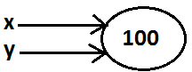
Example 6 :
import java.util.*;
class AutoBoxingAndUnboxingDemo {
public static void main(String[] args) {
Integer x=1000;
Integer y=1000;
System.out.println(x==y);//false
}
}
Diagram :
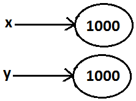
Diagram :
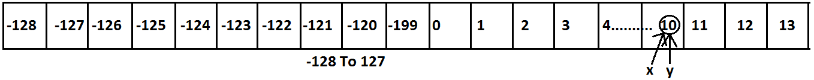
Conclusions :
- To implement the Autoboxing concept in every wrapper class a buffer of objects will be created at the time of class loading.
- By Autoboxing if an object is required to create 1st JVM will check whether that object is available in the buffer or not.
- If it is available then JVM will reuse that buffered object instead of creating new object.
- If the object is not available in the buffer then only a new object will be created. This approach improves performance and memory utilization.
But this buffer concept is available only in the following cases :
| Byte | Always |
| Short | -128 To 127 |
| Integer | -128 To 127 |
| Long | -128 To 127 |
| Character | 0 To 127 |
| Boolean | Always |
In all the remaining cases compulsory a new object will be created.
Examples :
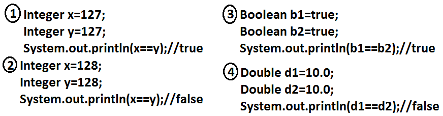
Internally Autoboxing concept is implemented by using valueOf() method hence the above rule applicable even for valueOf() method also.
Examples :
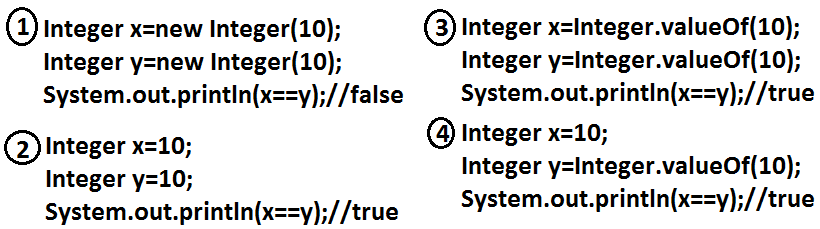
Note:
When compared with constructors it is recommended to use valueOf() method to create wrapper object.
Overloading with respect to widening, Autoboxing and var-arg methods :
Case 1: Widening vs Autoboxing :
Widening:
Converting a lower data type into a higher data type is called widening.
Example:
import java.util.*;
class AutoBoxingAndUnboxingDemo {
public static void methodOne(long l) {
System.out.println("widening");
}
public static void methodOne(Integer i) {
System.out.println("autoboxing");
}
public static void main(String[] args) {
int x=10;
methodOne(x);
}
}
Output:
Widening
Widening dominates Autoboxing.
Case 2: Widening vs var-arg method :
Example:
import java.util.*;
class AutoBoxingAndUnboxingDemo {
public static void methodOne(long l) {
System.out.println("widening");
}
public static void methodOne(int... i) {
System.out.println("var-arg method");
}
public static void main(String[] args) {
int x=10;
methodOne(x);
}
}
Output:
Widening
Widening dominates var-arg method.
Case 3: Autoboxing vs var-arg method :
Example:
import java.util.*;
class AutoBoxingAndUnboxingDemo {
public static void methodOne(Integer i) {
System.out.println("Autoboxing");
}
public static void methodOne(int... i) {
System.out.println("var-arg method");
}
public static void main(String[] args) {
int x=10;
methodOne(x);
}
}
Output:
Autoboxing
Autoboxing dominates var-arg method.
In general var-arg method will get least priority i.e., if no other method matched then only var-arg method will get chance.
It is exactly same as "default" case inside a switch.
Note : While resolving overloaded methods compiler will always gives the presidence in the following order :
- Widening
- Autoboxing
- Var-arg method.
-
Case 4:
import java.util.*;
class AutoBoxingAndUnboxingDemo {
public static void methodOne(Long l) {
System.out.println("Long");
}
public static void main(String[] args) {
int x=10;
methodOne(x);
}
}
Output:
methodOne(java.lang.Long) in AutoBoxingAndUnboxingDemo cannot be applied to (int)
Diagram:
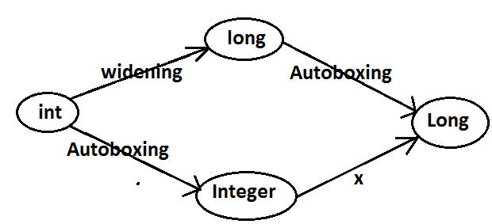
- imp :
Widening followed by Autoboxing is not allowed in java but Autoboxing followed by widening is allowed.
-
Case 5:
import java.util.*;
class AutoBoxingAndUnboxingDemo {
public static void methodOne(Object o) {
System.out.println("Object");
}
public static void main(String[] args) {
int x=10;
methodOne(x);
}
}
Output:
Object
Diagram :

-
Which of the following declarations are valid ?
- int i=10 ; //valid
- Integer I=10 ; //valid
- int i=10L ; //invalid CE :
- Long l = 10L ; // valid
- Long l = 10 ; // invalid CE :
- long l = 10 ; //valid
- Object o=10 ; //valid (autoboxing followed by widening)
- double d=10 ; //valid
- Double d=10 ; //invalid
- Number n=10; //valid (autoboxing followed by widening)
|